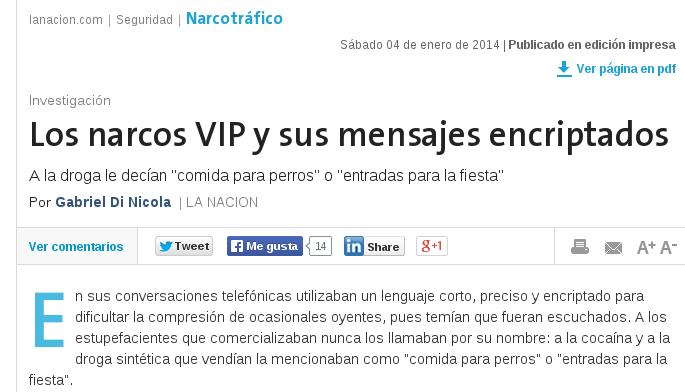
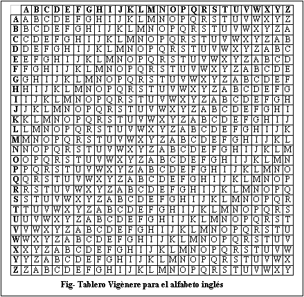
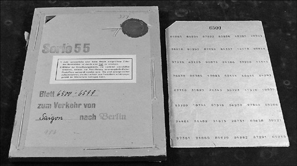
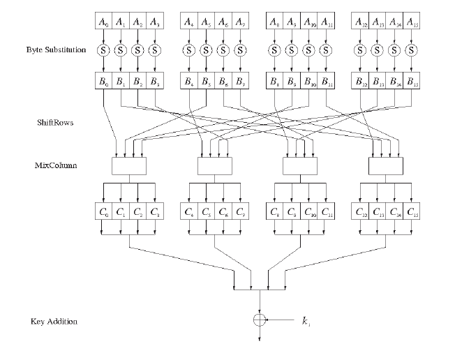
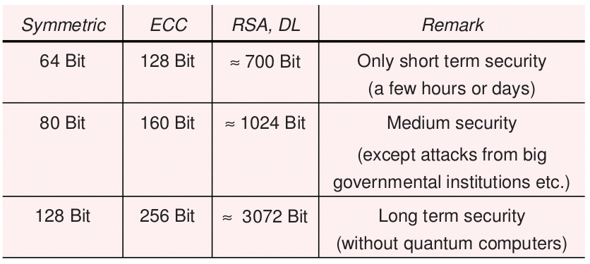
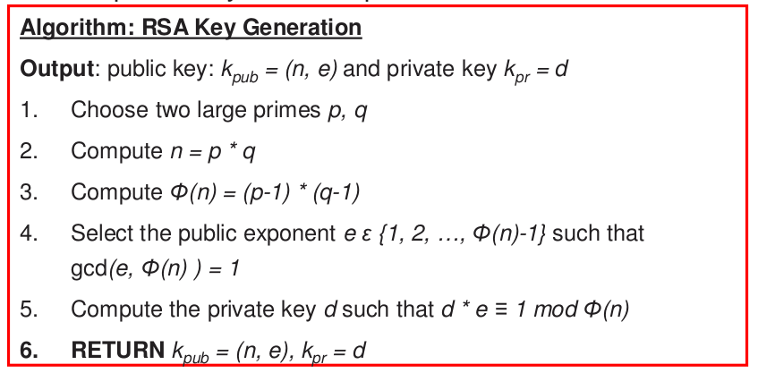
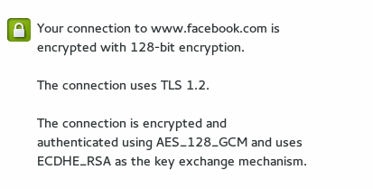
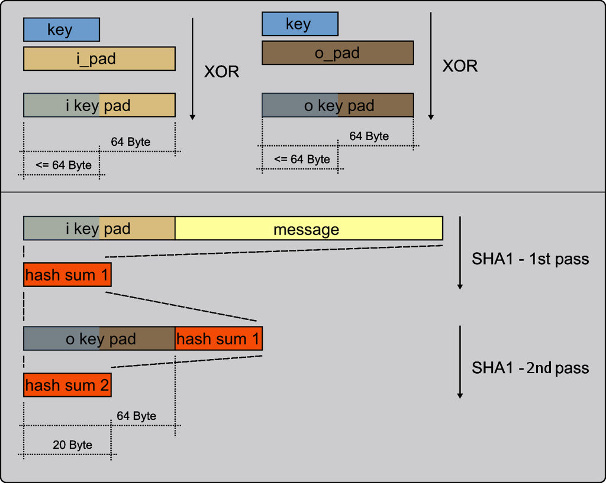

#nardoz
crypto
AndresQ / @quixote_arg
Diferenciemos:
Criptografía
Steganografía
Codificación
Steganografía
mensaje oculto
pero, a priori, legible (en texto plano)
Codificación
mensaje no oculto
mensaje legible
contenido (semántica) intercambiado / ininteligible

Criptografía
confidencialidad
integridad
autenticidad
Kerckhoffs principle
A cryptosystem should be secure even if the attacker knows all details about the system, with the exception of the secret key.
Historia
Cifrado de César
(sin clave)
A B C D E F G H I J K L M N O P Q R S T U V W X Y Z
D E F G H I J K L M N O P Q R S T U V W X Y Z A B C
LOS NARDOZ SON ESPIAS
ORV QDUGRC VRQ HVSLDV
Cifrado de César genérico
clave: N ∈ [1,25]
por ej: N = 11
A B C D E F G H I J K L M N O P Q R S T U V W X Y Z
L M N O P Q R S T U V W X Y Z A B C D E F G H I J K
LOS NARDOZ SON ESPIAS
WZD YLCOZK DZY PDATLD
fuerza bruta: 25 intentos max
Sustitución monoalfabética
clave: permutación del alfabeto
tamaño de la clave: 26! = 4×10²⁶
A B C D E F G H I J K L M N O P Q R S T U V W X Y Z
R Q O A F C J T N E M Z U S D K V L Y X P G H W B I
LOS NARDOZ SON ESPIAS
ZDY SRLADI YDS FNKNRY
fuerza bruta: imposible
Sustitución monoalfabética
Clave difícil de acordarse
A B C D E F G H I J K L M N O P Q R S T U V W X Y Z
N A R D O Z U L E S B C F G H I J K M P Q T V W X Y
monoalfabeto — side attack
fuerza bruta: imposible
~1200 DC: frecuencias de letras (árabes)
análisis de frecuencias del texto cifrado

nosotros no somos como los Orozco, yo los conozco son ocho los monos
Sustitución monoalfabética homofónica
uniformiza las frecuencias de símbolos
a: 12% → 12 símbolos
b: 2% → 2 símbolos
c: 5% → 2 símbolos
etc...
en un texto típico: igual frecuencia de símbolos
pero: análisis de a pares, tríos, etc
castellano: Q(1)U(4)
Sustitución polialfabética

CRIPTOCRIPTOCRIPTOCRIPTOCRIPTOCRIP
ayayayaycantaynollorescielitolindo
cpintmcpkpghcpvdezqimhvwgcqihzkeld
¡chau frecuencias!
le chiffre indéchiffrable
Sustitución polialfabética
Circa 1750 ¡muy complicado!
sustitución monoalfabética seguía siendo lo más usado
Charles Babbage
¡el de la máquina analítica!
chau Vigènere
Clave corta → se decripta fácil Vigènere
¿Y si la clave es más larga?
¿Y si la clave es más larga?
¿Y si la clave es tan larga como el texto?
one time pad
one time pad
cipher = key + text (mod 26)
one time pad
texto
TEXTOINDESCIFRABLE
pad
UMLKLNGLEDFXYOOMQN
cifrado
NQIDZVTOIVHFDFONBR
random + one time = perfect secrecy
one time pad
supongamos interceptamos el mensaje cifrado
c = NQIDZVTOIVHFDFONBR
18 letras: 26¹⁸ ~ 3*10²⁵
indescifrable incluso con poder computacional ilimitado
∀ x ∈ {a,z}n ∃ pad k ∈ {a,z}n / k ⊕ c = x
o sea: puedo descifrar cualquier texto
one time pad no agrega información (más allá de tamaño máximo)
FIN
¬FIN :(
Stream ciphers
Dada clave corta k, generar pseudorandom keystream (infinito) ks
y luego hacer símil one-time-pad: ks ⊕ m
como ks es pseudoaleatorio, no hay perfect secrecy
útiles para encriptar streams, o contenido del que no se sabe el tamaño de antemano
Stream ciphers (viejos, no usar)
RC4
CSS (DVD), crackeable en 2¹⁷
A5/1,2 (GSM)
E0 (bluetooth)
Stream ciphers actuales:
eStream (familia)
Salsa20
SOSEMANUK
Block ciphers
encriptan de a bloques
se usan en todos lados
E(k, m): {0,1}k × {0,1}n → {0,1}n
D(k, c): {0,1}k × {0,1}n → {0,1}n
∀ k: D(k, E(k, m)) = m
Block ciphers viejos (no usar):
Lucifer / DES / data encryption standard → k = 56 bit
3DES Ek1(Ek2(Ek3(m))) → k = 112bit
Block ciphers actuales:
Rijndael (AES) → b=128, k=128/192/256
RC6 → b=128, k=128/192/256
Blowfish → b=128, k=128/192/256
AES
Block ciphers:
Modus operandi
- electronic codebook
(ECB) - cipher block chaining
(CBC) - output feedback
(OFB) - cipher feedback
(CFB) - counter
(CTR) - Galois counter
(GCM)
ECB
ECB


CBC
CFB

CTR
distribución de claves = quilombo
Diffie-Hellman
asumamos + es fácil, - es imposible
n=49 (de público conocimiento)
Alice Eve Bob
s=17 t=23
n+s=66 n+t=72
→ n+s ← n+t
(n+t)+s=89 (n+s)+t=89
(n+s) (n+t)
(n+s+t) = ???
¡victoria!
Diffie-Hellman
α, p conocidos
Alice Eve Bob
a∈{1..p-1} b∈{1..p-1}
A=αa mod p B=αb mod p
A → ← B
k=Ba=(αa)b = αab
k=Ab=(αb)a = αab
???
public key criptography
(
kpub
,
kpr
)
trapdoor functions
n = p·q
¿p? ¿q?
dado p, q trivial
public key criptography
key exchange fácil
firma digital (de m o h(m))
non-repudiation
~1000 veces más lentos que simétricos
sistemas híbridos: RSA para key exchange, AES para resto
se basan en problemas NP-C
factorización de enteros, logaritmo discreto, curva elíptica
P=NP, computadoras quánticas
public key criptography
RSA

https
SSL/TLS

AES_128_GCM = AES, k=128 bits, galois counter mode
ECDHE_RSA = elliptic curve diffie-hellman exchange, RSA
integridad
(cryptografic) hash functions
H: {0,1}n → {0,1}m (n>>m)
preimage resistance: hallar x' / h(x') = y ∀y
2nd-preimage resistance: dado x hallar x' != x / h(x) = h(x')
collision resistance: hallar x, x' / h(x) = h(x')
cryptografic hash functions
MD5
SHA (1/224/256/384/512)
whirpool http://www.larc.usp.br/~pbarreto/WhirlpoolPage.html
Message Authentication Code (MAC)
keyed (cryptographic) hash function
confidentiality + integrity: authenticated encryption
H(k || m)
¡inseguro! Length Extension Attack
HMAC
basado en hash function
S(k, m) = H(k ⊕ opad, H(k ⊕ ipad || m))
OMAC, CBC-MAC, PMAC
basados en block ciphers
Authenticated encryption
mac-then-encrypt
E(m || mac(m))
puede fallar
encrypt-them-mac
E(m) || mac(C))
siempre correcto
encrypt-them-mac
E(m) || mac(m)
feo
Caso práctico
guardar passwords en la DB
hay que asumir el hacker (o topo) tiene acceso a TODO
db, código, filesystem, ...
ROT-26 horrible
encriptado con algun simétrico no suma
encriptado con algun asimétrico no suma
hasheado con MD5/SHA fácil con rainbow tables
hash + salt único fácil con CPU
hash + salt por registro difícil, con CPU
multihash + salt por registro muy difícil
bcrypt, scrypt muy difícil
en el tintero
quantum crypto
merkel puzzles
OTP (time, counter)
MiTM (CA)
biblio
The Code Book (S. Singh)
The Codebreakers (D. Kahn)
Cryptography (coursera)
Understanding Cryptography (www.crypto-textbook.com)
Handbook of Applied Cryptography (www.cacr.math.uwaterloo.ca/hac)
FIN
¿?
AndresQ / @quixote_arg